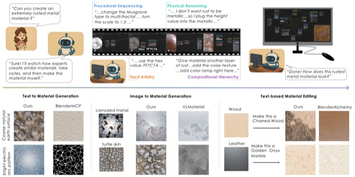
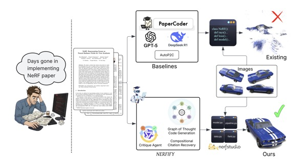
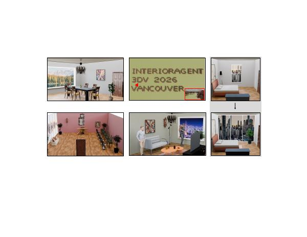

|
Kunal Gupta
I’m a PhD candidate in computer science at UC San Diego, advised by Manmohan Chandraker. I study how AI agents can learn from human creative judgment. When a filmmaker adjusts a camera or a material artist revises a shader, what can an agent learn from the choices that led to the final result?
I build agents that use creative software and produce work people can edit. My current research explores how agents can use Unreal Engine and DaVinci Resolve to stage, shoot, and edit a scene. My background is in 3D vision, neural rendering, and geometry, including research at Adobe and NVIDIA. I earned my MS at UC San Diego and my BE at BITS Pilani, and received a Qualcomm Innovation Fellowship in 2023.
I’m on the job market for early 2027. I’m looking for a full-time Research Scientist or Member of Technical Staff role at a startup or industry research lab. I’d love to hear from teams working on agents, computer use, simulation, or creative tools. Email me.
Email /
Resume /
Google Scholar /
GitHub /
LinkedIn
|
|
 |
Material Apprentice: Reflecting Process Expertise in Procedural Material Generation
Kunal Gupta, Gaurav Joshi, Yen-Ru Chen, Seemandhar Jain, Ishit Mehta, Manmohan Chandraker
ECCV 2026
Paper / Project page
An agent learns from artists’ demonstrations to build editable procedural materials in Blender.
|
 |
NERFIFY: A Multi-Agent Framework for Turning NeRF Papers into Code
Seemandhar Jain, Keshav Gupta, Kunal Gupta, Manmohan Chandraker
CVPR 2026 · Highlight
Paper / Project page
Agents turn research papers into trainable Nerfstudio plugins and use visual feedback to debug their implementations.
|
 |
InteriorAgent: LLM Agent for Interior Design-Aware 3D Layout Generation
Kunal Gupta, Ishit Mehta, Kun Wang, Nicholas Chua, Abhimanyu Krishna, Yan Deng, Ravi Ramamoorthi, Manmohan Chandraker
3DV 2026
Paper / Project page
An agent lays out 3D rooms in Blender, reasoning about how people move through a space and how the furnishings fit together.
|
|
|
MCNeRF: Monte Carlo Rendering and Denoising for Real-Time NeRFs
Kunal Gupta,
Miloš Hašan,
Zexiang Xu,
Fujun Luan,
Kalyan Sunkavalli,
Xin Sun,
Manmohan Chandraker,
Sai Bi
ACM SIGGRAPH ASIA 2023
paper
/
project page
/
arXiv
/
code
A general Monte Carlo-based method to accelerate the rendering of any NeRF representation.
|
|
|
Neural Jacobian Fields: Learning Intrinsic Mappings of Arbitrary Meshes
Noam Aigerman,
Kunal Gupta,
Vladimir Kim,
Siddhartha Chaudhuri,
Jun Saito,
Thibault Groueix
ACM SIGGRAPH 2022
(journal track)
Paper
/
code
A framework for learning to deform meshes in a highly detail-preserving manner, without being tied to a specific mesh
|
|
|
DiFiR-CT: Distance Field Representation resolves motion during Computed Tomography
Kunal Gupta,
Brendan Colvert
Zhennong Chen and
Francisco Contijoch
Medical Physics 2023
paper
/
project page
/
arXiv
/
code
Motion resolved computed tomography by combining neural implicit representations and differentiable rendering
|
| Motion Correction Image Reconstruction using NeuralCT Improves with Spatially Aware Object Segmentation
Zhennong Chen, Kunal Gupta, Francisco Contijoch
7th International Conference on Image Formation in X-Ray Computed Tomography, 2022
Paper and code
|
|
|
Neural Mesh Flow: 3D Manifold Mesh Generation via Diffeomorphic Flows
Kunal Gupta,
Manmohan Chandraker
NeurIPS 2020
(Spotlight)
project page
/
arXiv
/
code
/
Master's Thesis
A network that generates manifold meshes enabling photo-realistic physically based renderings and physics simulation
|
|
|
Force Control of Robotic Walker
Bachelor's Thesis
Novel Stable Gait Criteria (SGC) is proposed for safe and intuitive human-robot interaction and rehabilitation.
|
Questions about graduate study at UC San Diego? Read my FAQ.
|